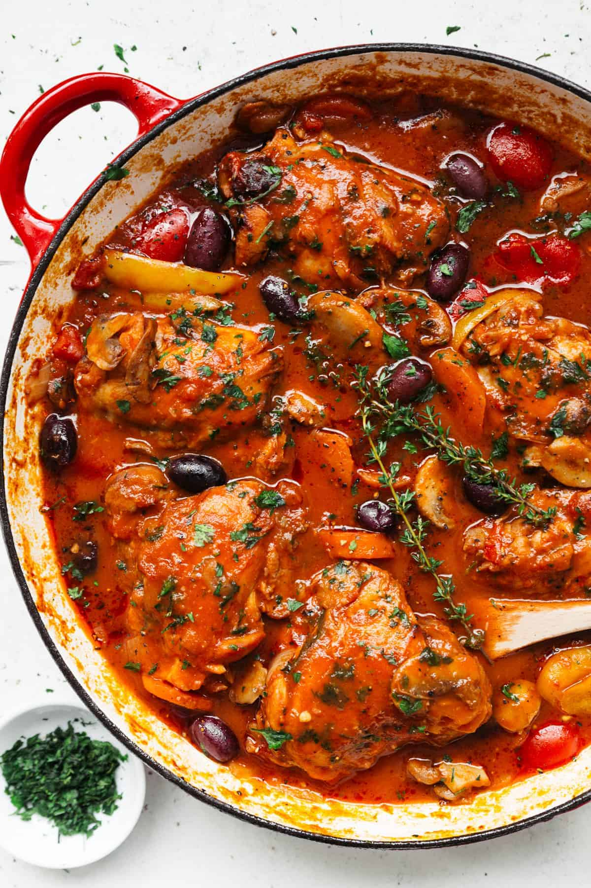

Chicken Cacciatore

Description
Cacciatore means hunter in Italian, and alla cacciatora translates to a hunter-style meal with chicken (or rabbit), onions, tomatoes, herbs, vegetables, and usually wine or vinegar.
Ingredients
- 4 chicken thighs
- 2 chicken breasts with skin and backbone, halved crosswise
- 2 teaspoons salt, plus more to taste
- 1 teaspoon freshly ground black pepper, plus more to taste
- 1/2 cup all purpose flour, for dredging
- 3 tablespoons olive oil
- 1 large red bell pepper, chopped
- 1 onion, chopped
- 3 garlic cloves, finely chopped
- 3/4 cup dry white wine
- 1 ( 28-ounce) can diced tomatoes with juice
- 3/4 cup reduced-sodium chicken broth
- 3 tablespoons drained capers
- 1 1/2 teaspoons dried oregano leaves
- 1/4 cup coarsely chopped fresh basil leaves
Steps
- Sprinkle the chicken pieces with 1 teaspoon of each salt and pepper. Dredge the chicken pieces in the flour to coat lightly.
- In a large heavy saute pan, heat the oil over a medium-high flame. Add the chicken pieces to the pan and saute just until brown, about 5 minutes per side. If all the chicken does not fit in the pan, saute it in 2 batches. Transfer the chicken to a plate and set aside. Add the bell pepper, onion and garlic to the same pan and saute over medium heat until the onion is tender, about 5 minutes. Season with salt and pepper. Add the wine and simmer until reduced by half, about 3 minutes. Add the tomatoes with their juice, broth, capers and oregano. Return the chicken pieces to the pan and turn them to coat in the sauce. Bring the sauce to a simmer. Continue simmering over medium-low heat until the chicken is just cooked through, about 30 minutes for the breast pieces, and 20 minutes for the thighs.
- Using tongs, transfer the chicken to a platter. If necessary, boil the sauce until it thickens slightly, about 3 minutes. Spoon off any excess fat from atop the sauce. Spoon the sauce over the chicken, then sprinkle with the basil and serve.